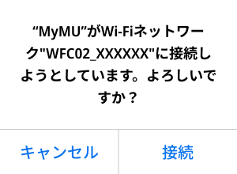
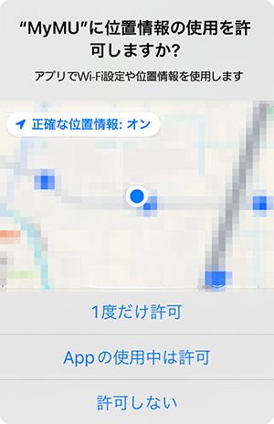
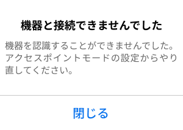

アクセスポイントモードにする
- 「 次へ」をタップ後、以下のメッセージが表示されたら「接続」をタップしてください。「キャンセル」をタップすると接続に失敗します。


- 「 次へ」をタップすると位置情報の使用許可を求めるメッセージが表示されます。「1度だけ許可」「Appの使用中は許可」あるいは「アプリの使用時のみ」「今回のみ」をタップしてください。「許可しない」をタップすると接続に失敗します。


- オートメーション機能で位置情報を使用する場合は、位置情報の許可を求める画面で「Appの使用中は許可」「アプリの使用時のみ」をタップし、「正確な位置情報」を「オン」にしてください。オートメーション機能については取扱説明書をご確認ください。
- 接続に失敗した場合は右のメッセージが表示されます。「閉じる」をタップして画面を閉じ手順4からやり直してください。 